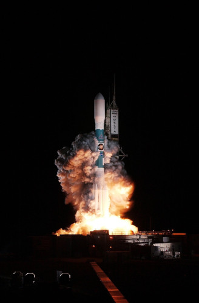

Quem somos?
A OIRE (Organização Internacional de Regulação Espacial) é uma organização independente, fundada em 1992 e sediada em Olivença, Portugal. A OIRE foi criada um ano após o fim da guerra fria quando um grupo de cientistas e engenheiros portugueses inspiraram-se na corrida espacial entre os EUA e a URSS que tiveram grandes avanços nas suas tecnologias de exploração espacial durante a altura. É uma organização de regulação e desenvolvimento espacial que colabora com outros países e organizações para tornar as exploração espacial algo mais produtivo, seguro e justo.
Principios
Exploração
